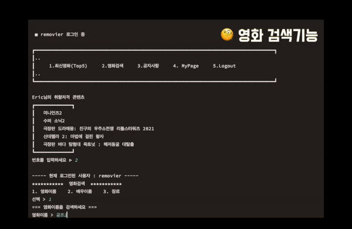
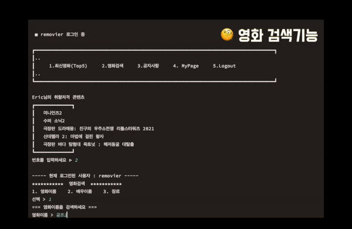

Removier
 

Removier 🎥
= Review+Movie+er
2022/Aug/23rd - 2022/Sep/13rd
GitHub
https://github.com/Eric-JongYoung/removier_final
Youtube
Abstract
The latest movie review program
✅ Detail
It's my first IT project, and it's based on the Java Console. Movie ticket is ₩ 16,000($14)! Consumers don't want to watch boring movies!You can check other consumers' movie reviews through Remover in advance and choose the movie you want to watch.
It also helps other consumers through the reviews you left!
Through this, movie officials can identify consumers' needs by checking their horoscopes and reviews!
🛠️ Tech Stacks
- - Java 11
- - Oracle 19c
- - Mac OS Monterey, Windows 10
- - intelliJ IDEA
👾 My Role
Role : Team Leader- [Movie Search]
- - Top 5 movies by the number of spectators
- [Admin Page]
- - Admin Login, Register ID
- - Admin can see User's Information
- - Admin can write Notice
- [Suggest movies to Users by their taste]
- - Based on the genre of preference selected by the member when signing up, the recommendation function is implemented as a movie that has a large audience of db to the member.
- [Connecting DB by Oracle Cloud]
- - Instead of Local Oracle, the project and JDBC were linked using Oracle Cloud's ATP.
💎 Main Features
- I recorded the contents of the project on My YouTube.💡 What was I takeaway?
- - By using Git for the first time, I lacked knowledge of merge due to lack of concept of git, but after learning the function while using it more often, I realised how to use it to some extent.
- - For the first time, I worked on it project and tried to write code while keeping the MVC structure as much as possible. Through this, we learned about the MVC structure.
- - In the beginning, I had a hard time integrating Oracle Cloud without knowing the difference between the libraries required for Oracle and Local Oracle integration. However, while solving this problem, he achieved his own ability to solve and overcome problems.
🔥 What should I do to make the Project to be better?
- - As it was made up of the Java Console, the contents of the project could not be seen at a glance. Need to supplement the UI a little more.
- - When importing movie information, the information brought from the outside was parsed and put directly into the DB, but next time, it is necessary to automatically input the latest movie into the DB using the API.
- - When I was doing Git Commit, I wrote a commit message randomly, so it was hard to understand where and what I did. The need to create a consistent message with team members next time.